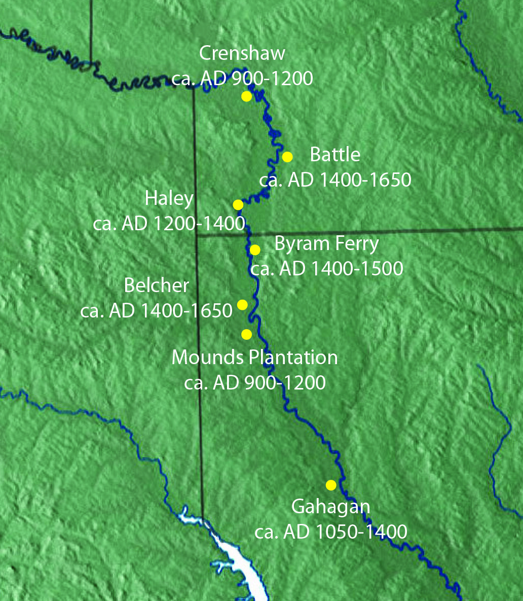

The first people known to settle along the Red River are the Caddo...
The Red River watershed is filled with highly-erodible soils (insert HMTL hyperlink to source) that has led to both the name of the river and what was called the Great Raft...
Changes in Red River over time (start with native tribes, great raft, Shreve, floods, damming)
The images in the comparison below reflect the differences between 1992 on the left (2 years prior to the completion of the dam) and 1995 on the right (the first year after the dam was completed).
Below you can see the differences before the construction of the dam in 1992 (left) and 30 years later in 2022 (right).